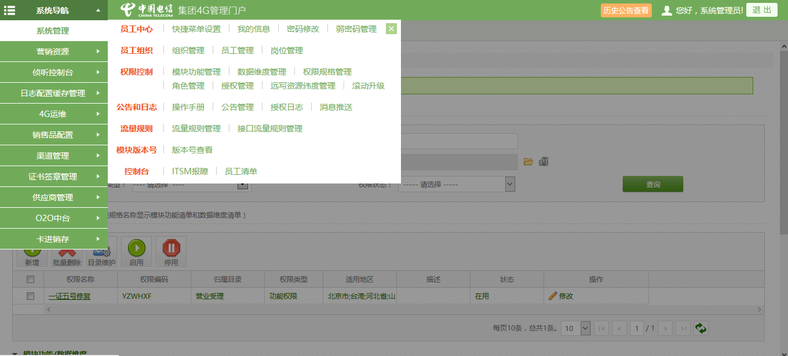

-
- Basic info. 基本信息
- 个人信息: 张磊 / 男 / 23岁
- 学校/专业: 湘潭大学/软件工程
- 英语水平: CET-4
- GitHub: www.github.com/zhanglei20
-
- Experience. 项目与工作经验
亚信科技(南京)有限公司（2015.7 - 至今）
-
电信4G管理平台项目
参与 电信4G管理平台 的开发工作，根据需求完成项目的基本系统管理部分，完成了权限管理、角色管理、员工管理、模块功能管理、报表查询等页面
使用spring的动态路由实现数据库读写分离，扩展后端管理页面查询可以查询多个数据库
项目采用 JavaWeb服务 的形式，运行在 was服务器 上, 除了提供管理页面外，系统还提供多个API接口
使用spring、SpringMVC、Mybatis、LigerUI、LayerUI等技术栈，实现前端页面及数据交互
使用 eclipse、webstorm、svn等进行代码管理以及开发
在担任系统管理开发期间，独自一人担任系统管理的需求跟踪，开发，部署上线等工作，工作期间保障上线后系统零bug，保证系统平稳运行，优化系统响应速度
 -
电信物联网、转售项目
参与 电信物联网、转售 的开发工作，结合4G管理平台项目，搭建物联网、转售等系统
增加单点登录，集成其他系统模块功能
主要负责系统管理部分的开发，以及运维工作，保证系统平稳运行，优化系统功能等
个人项目
-
- Skill. 技能清单
后端
-
语言
熟练使用 java，具备面相对象思想，熟练运用SpringMVC、spring框架和MVC三层架构开发模式
熟练使用 Node.JS 进行后端 web 开发，理解 Node.JS 异步非阻塞的编程模型
熟练掌握 Javascript 语言，精通 Node.js 标准库的使用，能完成相应的扩展开发
熟练使用 oracle、Redis， MongoDB 等相关数据库,能编写存储过程、sql优化等
了解 svn、git等版本控制工具
-
环境
熟悉 Linux 开发环境、 Linux 服务器环境搭建部署，两年 Linux 日常使用经验
了解 Apache Nginx web服务器，一年多建站经验
Web前端
-
HTML / CSS
能够编写语义化的 HTML，模块化的 CSS，完成较复杂的布局
能够运用前端UI框架编写复杂布局页面，例如LigerUi,layerUi,bootstrap等
-
JavaScript
熟悉原生Javascript，熟悉jQuery等类库编码
能运用模块化、面向对象的方式编程
了解 vue.js LigerUi layUI 的使用
-
其他
了解 Grunt前端自动化工具、npm等包管理工具
了解 前端模块化思想
其他
-
遇到开发难题，能认真分析问题难点，并耐心解决，遇到紧急开发任务，按质按量完成
学习能力强，掌握 eclipse、webstorm 、Vim Git 等开发工具的使用
开发兴趣强烈，有良好英文文档阅读习惯

张磊的简历
"Coding makes our life colorful."
-
- Contact. 联系方式
- 邮箱: 675597**2@qq.com
- 微信: lei***
- QQ: 675597**2
-
- Application. 应聘岗位
- Java工程师
-
- Tech. 技能点
JavaScriptHTMLCSSSQLnodejsJava
我是一个充满活力、对开发由衷热爱、善于发现问题的Java工程师。
我目前正在寻找Java工程师岗位，希望借此机会为贵司献上我的一点绵薄之力，快招我到碗里来吧！